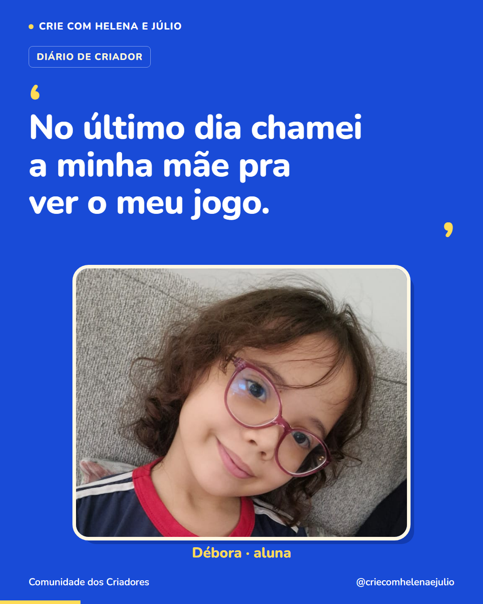

P53 · ‘No último dia chamei a minha mãe pra ver o meu jogo.’
Imagem única · 1080 × 1350 · Diário de criador · Segunda publicação da semana 10


Legenda completa
Débora começou achando que seria difícil e terminou querendo mostrar o jogo para a mãe. Ela contou: ‘Achei que ia ser difícil, mas fui montando os bloquinhos e deu certo.’ E depois: ‘No último dia chamei a minha mãe pra ver o meu jogo.’ São duas partes da experiência dela: aprender a fazer e compartilhar o resultado. Quando seu filho chamar você para ver uma criação, deixe ele apresentar. Pergunte de qual parte mais gostou ou o que aprendeu a fazer. Uma conquista pequena também pode render uma boa história. Siga o perfil para acompanhar outras experiências de crianças criando os próprios jogos.